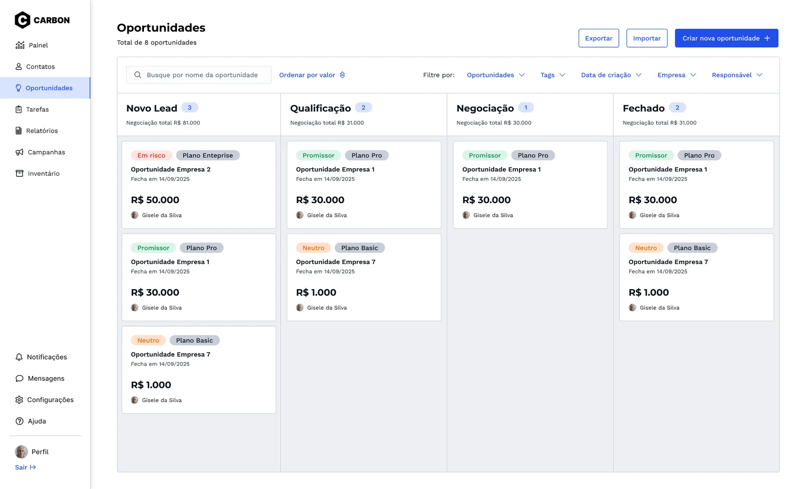
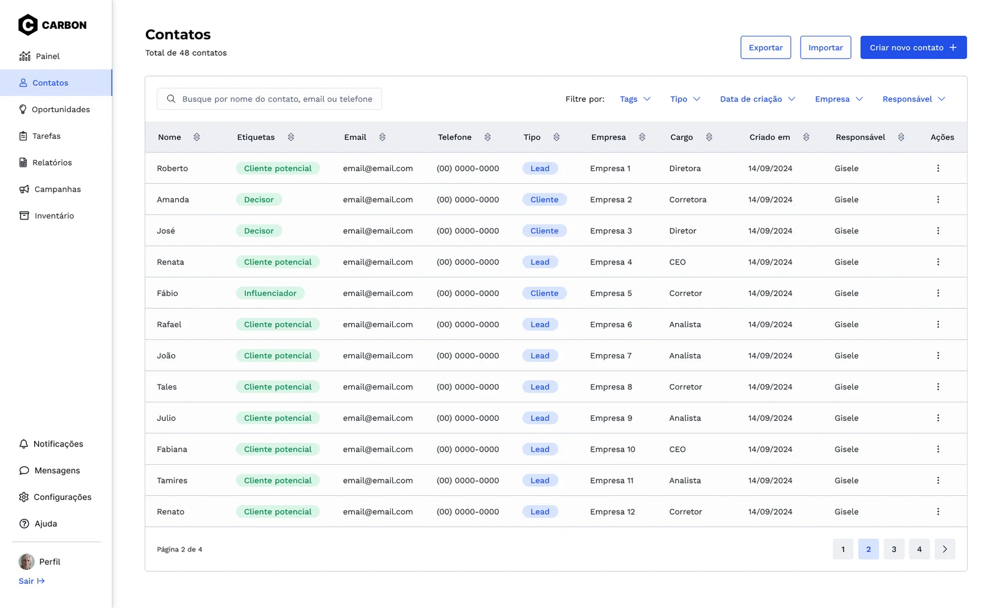
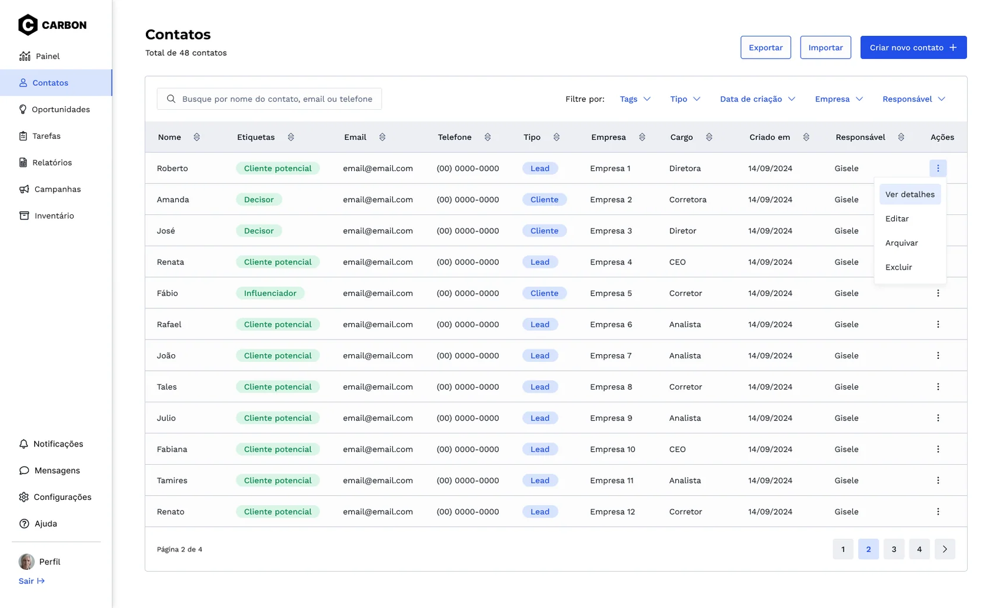
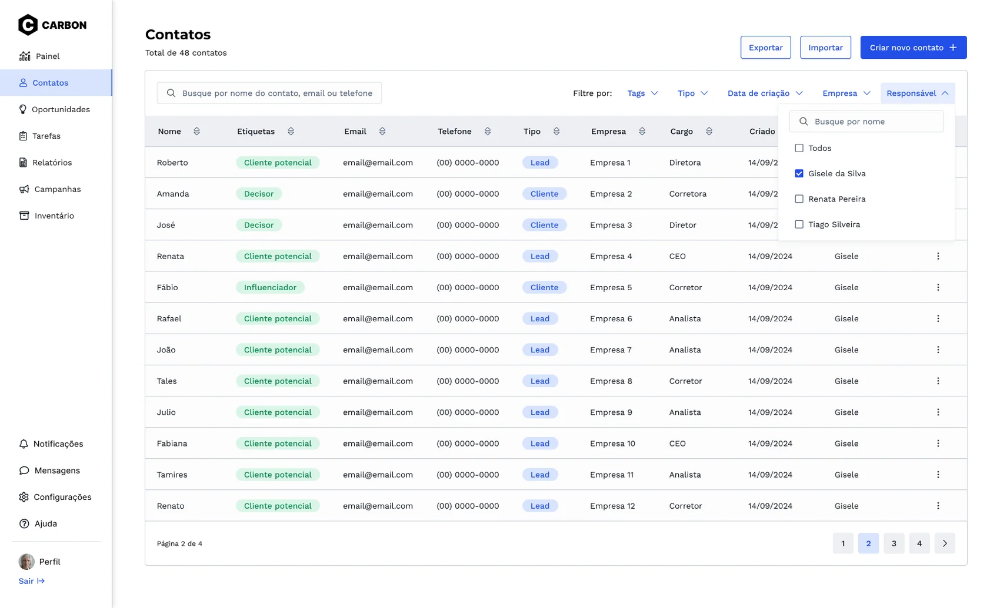
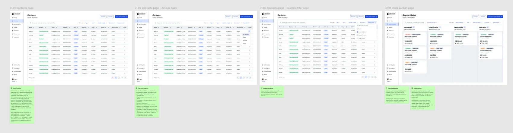
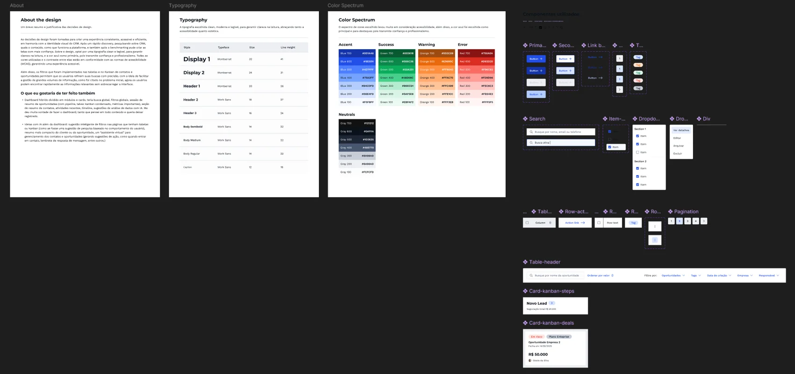
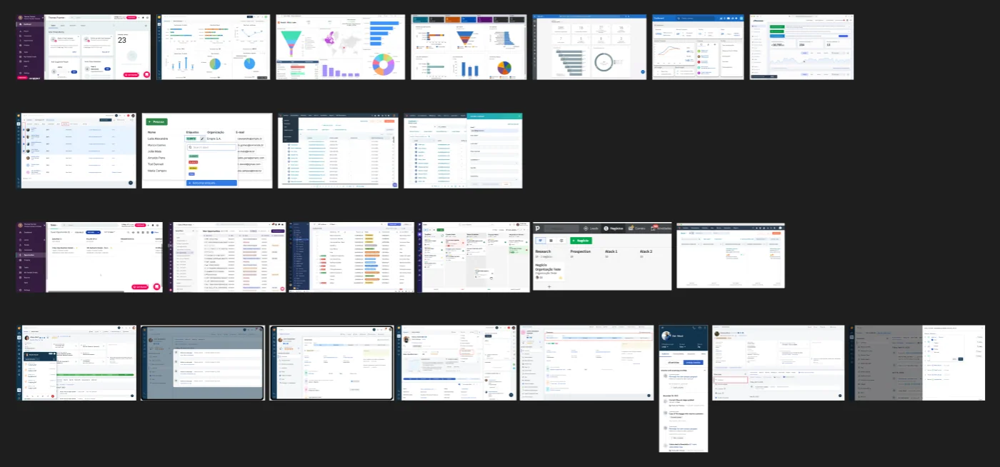

A one-day CRM design challenge exploring scannable contact tables, filtering, quick actions and opportunity management.

An independent one-day hiring design exercise, not a shipped customer product.
Context
I completed this project in one day for a job application.
The briefing was:
"You are redesigning the contacts/opportunities page of a CRM targeted at small and medium-sized businesses. Currently, the page contains a large amount of information, including contact lists, sales opportunity data, and quick actions such as edit or delete. Users struggle to navigate this page, especially when handling multiple contacts or opportunities at once. Your challenge is to simplify and organize the page while maintaining efficiency in data management."
The Design
01.01 Contacts page


Reasoning behind the design decisions:
I chose to use a more traditional table format because it provides an organized way to visualize data, allowing users to see almost all the necessary information in a single row. To ensure a cognitively lightweight experience, the columns were carefully selected and structured in a clear and straightforward manner, avoiding information overload. Additionally, filters and sorting options enable users to customize the view according to their specific needs at any given moment.
It would be entirely possible to transform this into a Kanban/funnel view, just like in the Opportunities section, allowing users to switch between the two. However, for this delivery, I opted to create two separate screens—one with a table and another with a Kanban view.
01.02 Contacts page - Actions open


Behavior and Interaction:
Clicking on "View Details" opens a modal with the full contact information, including:
- Basic information (name, job title, company, etc.)
- Related opportunities (if it is a lead)
- Activities and interactions (structured as a timeline)
- Notes and comments
- Related documents, if any
- Deal details (if the lead is associated with an opportunity)
- Analytics and insights, potentially enhanced by AI for conversion predictions, suggested next steps, behavioral analysis, and more
- Tasks related to the contact
01.03 Contacts page - Example filter open


Behavior and Interaction:
The user can apply multiple filters to create a fully customized view, as well as use the search field.
02.01 Deals kanban page

Behavior and Interaction:
As in other products with a Kanban board, cards can be dragged and dropped to the next stage of the funnel with a single click.
Similar to the table view, various filters can be applied here to improve visibility and card organization.
Reasoning behind the design decisions:
I chose to implement a Kanban board specifically in the Opportunities section because it significantly improves visualization, aligning with the funnel-like structure that CRM users are accustomed to.
It would also be possible and beneficial to add a table view, allowing users to switch between the two formats. However, for this delivery, I opted to showcase the Kanban layout to introduce variety in the interface elements.
How my Figma looks like when is a fast-paced project
Page 1: Design (I love using notes)


Page 2: Components and Style Guide


Page 3: Research (in this case I could only do benchmarking because of the deadline)


About the Design
Justification and general context of design decisions
The design decisions were made to create a consistent, accessible, and efficient experience in harmony with the CRM’s visual identity. After a quick discovery phase—researching CRMs, their content, how the platform works, and conducting benchmarking—I was able to design the screens with greater confidence.
Regarding the design, I chose a clean and legible typography to ensure readability and used blue as the primary color, as it conveys trust and professionalism. All selected colors and their contrast levels comply with accessibility standards (WCAG), ensuring an inclusive experience.
Additionally, the filters implemented in the tables and Kanban boards for contacts and opportunities allow users to refine their searches with precision. The goal was to facilitate the management of large amounts of information, addressing the initial problem. Now, users can quickly find relevant data without overloading the interface.
What I would have liked to include
- A hybrid dashboard divided into modules and cards: It would feature a global search, global filters, an opportunity summary section (including a pipeline, possibly a condensed Kanban, and key metrics), a contact summary section, recent activities, a timeline, and AI-powered data analysis suggestions. I was really excited about the dashboard idea—I even mapped out the entire content—so I wanted to document it here.
- Additional AI-powered features beyond the dashboard:
- Intelligent filter suggestions on pages with tables or Kanban views (similar to search recommendations based on user behavior).
- A more compact summary of clients or opportunities.
- A "virtual assistant" for managing contacts and opportunities, generating action suggestions (e.g., when to follow up, message response reminders, and more).